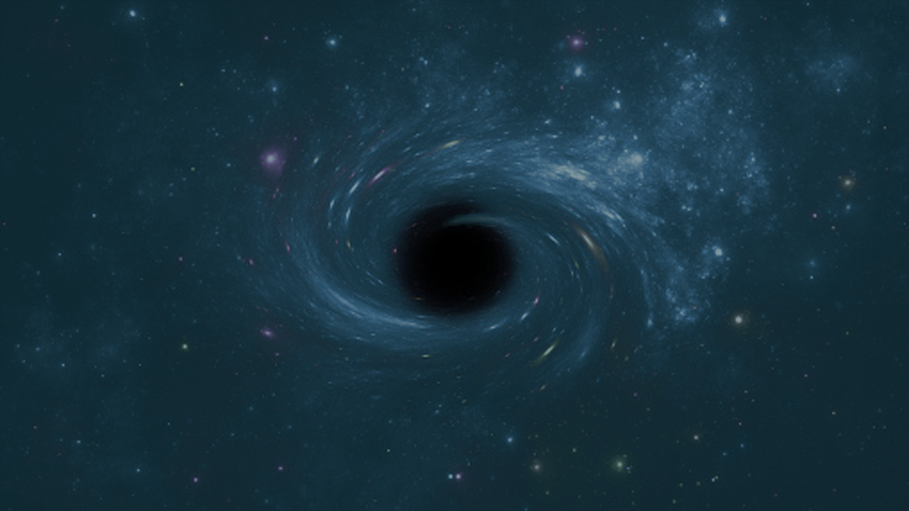

<div class="center error-page">
  <h1 class="error">404</h1>

  <div class="texts">
    <h2>Rota não encontrada</h2>

    <p class="error">O Universo não tem limites. Nele você pode se perder.</p>

    <a class="button return" href="/"> Reiniciar Viagem </a>
  </div>
</div>
